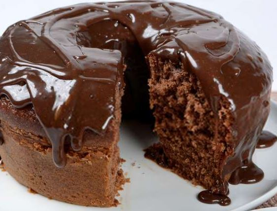
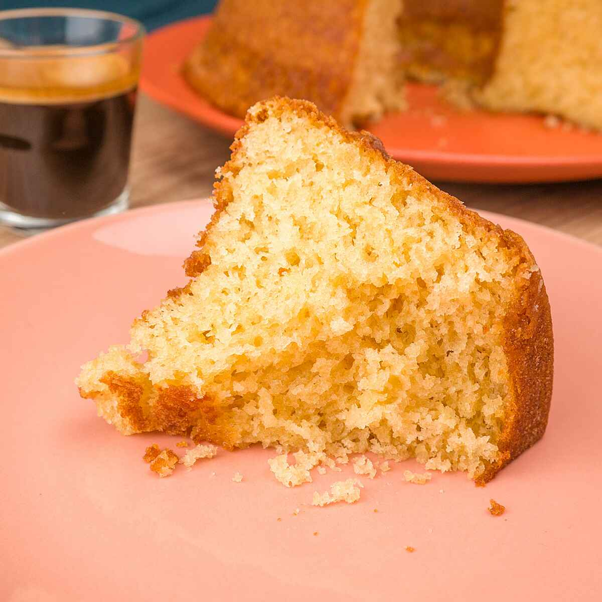
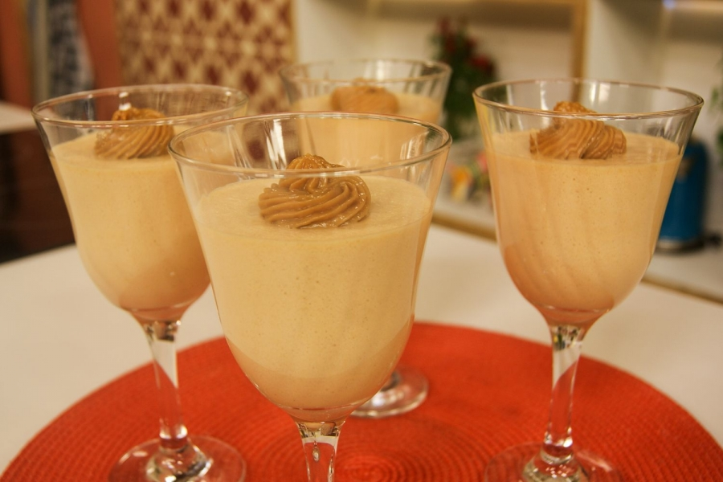
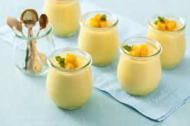

Tortas
Torta De Maracujá

Base
1 pacote de biscoitos maisena triturados (200 g)
100 g de manteiga derretida
2 colheres (chá) de açúcar de confeiteiro (6 g)
1 colher (café) de raspas de limão (1 g)
Recheio
2 claras grandes (80 g)
4 colheres (sopa) de açúcar de confeiteiro (60 g)
1 pote de queijo cottage peneirado (200 g)
1 lata de leite condensado
1 lata de creme de leite com soro
1 xícara (chá) de suco de maracujá (240 ml)
1 e 1/2 envelope de gelatina em pó incolor (18 g) hidratada e dissolvida em 6 colheres (sopa) de água (90 ml)
Calda de maracujá com sementes, morangos e arabesco de caramelo para decorar (opcional)
Base
Misture bem os ingredientes até obter uma farofa.
Forre o fundo de um aro (25 cm de diâmetro) apoiado em assadeira forrada com papel-manteiga.
Leve ao forno médio-baixo preaquecido (160 ºC) por 15 minutos. Deixe esfriar.
Recheio
Aqueça as claras com o açúcar em banho-maria, mexendo sempre, até amornar bem (o suficiente para não queimar o dedo), sem deixar cozinhar.
Bata a mistura na batedeira até obter picos firmes (merengue). Reserve.
Numa tigela, coloque o queijo e o leite condensado.
Junte o creme de leite e o suco de maracujá e misture bem.
Incorpore a gelatina derretida ainda quente.
Por fim, agregue o merengue delicadamente.
Preencha a torta e leve para gelar por 6 horas ou de um dia para o outro.
Se desejar, decore com calda de maracujá, morangos e arabesco de caramelo antes de desenformar.
Prontinho... Uma delícia!
Torta De Morango

Massa
1 pacote de biscoito maisena
1/2 xícara de margarina
Recheio
700 ml de leite
2 colheres de essência de baunilha
2 gemas peneiradas
1 lata de leite condensado
4 colheres de amido de milho
1 lata de creme de leite
Cobertura
2 caixas de morangos
1 pacote de gelatina de morango
Massa
Passe os biscoitos pelo processador até formar uma farofa fina.
Coloque em uma tigela e vá misturando margarina até formar uma massa lisa.
Forre uma forma de aro removível asse por mais ou menos 15 minutos.
Reserve.
Recheio
Leve ao fogo o leite, leite condensado, essência de baunilha , amido de milho e as gemas peneiradas.
Misture bem, mexa até formar um creme deixe amornar e junte o creme de leite.
Coloque o creme na forma por cima da massa já assada.
Lave bem os morangos e pique em fatias no sentido do comprimento.
Arrume por cima do creme, reserve.
Faça a gelatina com 350 ml de água deixe gelar até que fique num aspecto grossa, que escorra ainda da colher e coloque devagar por cima dos morangos.
Leve à geladeira para acabar de endurecer.
Desenforme.
Sirva gelada.
Prontinho... Uma delícia!
Torta De Limão

Massa
200 g de biscoito de maisena
150 g de margarina
Recheio
1 lata de leite condensado (395 g)
suco de 4 limões
1 caixa de creme de leite (200 g)
Raspas de 2 limões
Cobertura
3 ou 4 claras de ovo
Raspas de 2 limões para decorar
3 colheres (sopa) de açúcar
Massa
Triture o biscoito de maisena em um liquidificador ou processador.
Junte a margarina e bata mais um pouco.
Despeje a massa em uma forma de fundo removível (27 cm de diâmetro).
Com as mãos, espalhe os biscoitos triturados no fundo e nas laterais da forma, cobrindo toda área de maneira uniforme.
Leve ao forno médio (180° C), preaquecido, por aproximadamente 10 minutos.
Recheio
Bata todos os ingredientes no liquidificador (exceto as raspas de limão) até obter um creme liso e firme.
Recheie a massa já assada e leve à geladeira por 30 minutos.
Cobertura
Bata as claras em neve e acrescente o açúcar.
Misture até obter um ponto de suspiro e leve ao forno até dourar.
Desenforme a torta (sem retirar o fundo falso), despeje a cobertura e acrescente as raspas de limão.
Prontinho... Uma delícia!
Bolos
Bolo De Chocolate

Massa
4 ovos
2 colheres (sopa) de manteiga
2 xícaras (chá) de açúcar
1 xícara (chá) de leite
4 colheres (sopa) de chocolate em pó
3 xícaras (chá) de farinha de trigo
2 colheres (sopa) de fermento
Calda
2 colheres (sopa) de manteiga
2 latas de creme de leite com soro
7 colheres (sopa) de chocolate em pó
3 colheres (sopa) de açúcar
Massa
Em um liquidificador adicione os ovos, o chocolate em pó, a manteiga, a farinha de trigo, o açúcar e o leite, depois bata por 5 minutos.
Adicione o fermento e misture com uma espátula delicadamente.
Em uma forma untada, despeje a massa e asse em forno médio (180 ºC) preaquecido por cerca de 40 minutos. Não se esqueça de usar uma forma alta para essa receita: como leva duas colheres de fermento, ela cresce bastante! Outra solução pode ser colocar apenas uma colher de fermento e manter a sua receita em uma forma pequena.
Acrescente o creme de leite e misture bem até obter uma consistência cremosa.
Calda
Em uma panela, aqueça a manteiga e misture o chocolate em pó até que esteja homogêneo.
Desligue o fogo e acrescente o açúcar.
Bolo De Cenoura

Massa
1/2 xícara (chá) de óleo
4 ovos
2 e 1/2 xícaras (chá) de farinha de trigo
3 cenouras médias raladas
2 xícaras (chá) de açúcar
1 colher (sopa) de fermento em pó
Cobertura
1 colher (sopa) de manteiga
1 xícara (chá) de açúcar
3 colheres (sopa) de chocolate em pó
1 xícara (chá) de leite
Massa
Em um liquidificador, adicione a cenoura, os ovos e o óleo, depois misture.
Acrescente o açúcar e bata novamente por 5 minutos.
Em uma tigela ou na batedeira, adicione a farinha de trigo e depois misture novamente.
Acrescente o fermento e misture lentamente com uma colher.
Asse em um forno preaquecido a 180° C por aproximadamente 40 minutos.
Cobertura
Despeje em uma tigela a manteiga, o chocolate em pó, o açúcar e o leite, depois misture.
Leve a mistura ao fogo e continue misturando até obter uma consistência cremosa, depois despeje a calda por cima do bolo.
Bolo De Baunilha

Massa
3 ovos grandes
1 colher (chá) de essência de baunilha
250 ml de leite
1 colher (sobremesa) de fermento em pó
1/2 xícara de óleo
2 xícaras de açúcar
3 xícaras de trigo
Em uma batedeira, bata os ovos até ficarem bem clarinhos.
Adicione o óleo sem parar de bater.
Coloque o açúcar de uma só vez e continue batendo.
Adicione a baunilha.
Aos poucos despeje o trigo e o leite.
Depois de bem batido, adicione o fermento e misture só por alguns segundos, pois, se bater muito depois de colocar o fermento o bolo não crescerá.
Despeje a mistura em uma forma média, untada com margarina e trigo.
Asse em forno médio, por aproximadamente 40 minutos, ou até dourar.
Mousse
Mousse de doce de leite

1 lata de doce de leite de 400 g
1 caixa de bis
2 caixas de creme de leite
Coloque o doce de leite na batedeira e bata durante uns 10 minutos, até perceber que ele mudou a consistência.
Acrescentar as 2 caixas de creme de leite e misturar novamente
Pique os Bis em 4 partes e jogue por cima.
Prontinho... Uma delícia!
A Mousse de limão
 1/2 copo de suco de limão
1 caixa de creme de leite
Ras1 caixa de leite condensadopa
Rale o limão para retirar a raspa.
Bata o creme de leite, o leite moça o suco de limão adicione lentamente, raspa do limão, só um pouquinho para dar coloração.
Coloque na travessa e joguee a raspa do limão esfarinhada.
Prontinho... Uma delícia!
1/2 copo de suco de limão
1 caixa de creme de leite
Ras1 caixa de leite condensadopa
Rale o limão para retirar a raspa.
Bata o creme de leite, o leite moça o suco de limão adicione lentamente, raspa do limão, só um pouquinho para dar coloração.
Coloque na travessa e joguee a raspa do limão esfarinhada.
Prontinho... Uma delícia!
Mousse de manga

1 lata de leite condensado
1 lata de suco concentrado de manga tipo Maguary (medida da lata de leite condensado)
1 manga madura (de sua preferência) picada em cubinhos
1 lata de creme de leite com soro
1 envelope de gelatina sem sabor (preparada conforme instruções da embalagemo
sal e pimenta-do-reino moída na hora a gosto
Coloque no liquidificador o leite condensado, o creme de leite, o suco de manga e reserve.
Prepare a gelatina sem sabor conforme instruções da embalagem.
Acrescente a gelatina aos demais ingredientes no liquidificador.
Bata por aproximadamente 1 minuto.
Coloque o creme em uma vasilha apropriada para sobremesa.
Acrescente a manga cortada em cubinhos.
Leve ao freezer por aproximadamente 1 hora, ou à geladeira por 2 horas e 30 minutos, ou até que fique firme.
Prontinho... Uma delícia!